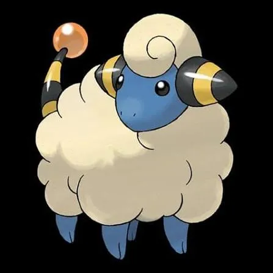
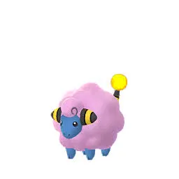
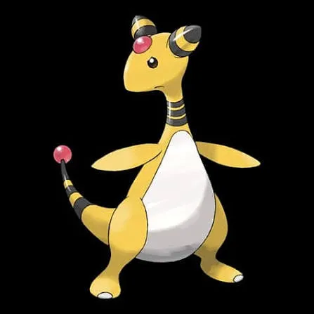
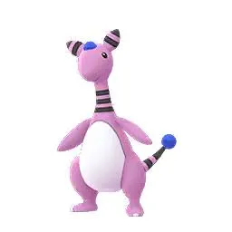
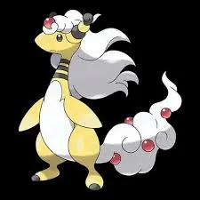
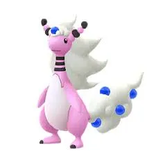

🧭 Quick Navigation
📖 Introduction
The Mega Evolution of Ampharos, Mega Ampharos is a powerful Electric and Dragon-type Pokémon that appears in Mega Raid battles in Pokémon GO. While it may look intimidating due to its impressive stats and unique typing, it has several exploitable weaknesses that trainers can use to defeat it efficiently.
Mega Ampharos is particularly vulnerable to Ground-type attacks because Electric-type Pokémon take super effective damage from Ground moves. Dragon, Fairy, and Ice-type attackers can also deal strong damage and are commonly used counters in this raid.
Using Mega Ampharos in raids gives bonus damage to:
- Electric-type Pokémon
- Dragon-type Pokémon
By preparing the right team of counters and understanding its movesets, players can defeat Mega Ampharos with a small group of trainers and earn valuable Mega Energy and raid rewards.
📊 Mega Ampharos Stats
| Type | Electric / Dragon |
| Max CP | 4799 |
| Weather Boost | Rainy, Windy |
| Shiny | Yes |
| Base Atttack | 294 |
| Base Defence | 203 |
| Base Stamina | 207 |
Mega Ampharos has a very high attack stat, making it a dangerous raid boss if not countered properly.
🎯 Catch CP & 100% IV
After defeating Mega Ampharos, you will encounter a normal Ampharos.
CP Range:
- No Weather Boost: 2,332-2,426 CP
- Weather Boost: 2,915-3,032 CP CP
100% IV:
- 2426 (Normal)
- 3032 (Weather Boosted)
Use:
- Golden Razz Berry
- Curveball Excellent Throws
⚠️ Mega Ampharos Weaknesses
| Category | Details |
|---|---|
| ❌ Weak To: |
 Dragon • Dragon •
 Fairy • Fairy •
 Ice • Ice •
 Ground Ground
|
| ✅ Resistant To: |
 Fire • Fire •
 Flying • Flying •
 Grass Grass
 Steel • Steel •
 Water • Water •
 Electric Electric
|
Notes: Mega Ampharos is double weak to Ground-type moves and also takes super-effective damage from Ice-, Dragon-, and Fairy-type attacks. Ground remains the most efficient option due to its 2x weakness.
🗡️ Best Counters for Mega Ampharos
Ground-type Pokémon are the most effective against Mega Ampharos. High-DPS Ground counters can defeat it quickly, while avoiding its Electric attacks entirely.
🐉 Dragon-type Counters
- Eternatus: (Dragon Tail / Dynamax Cannon)
- Rayquaza: (Dragon Tail / Breaking Swipe)
Dragon attacks hit Ampharos super effectively.
Legendary Dragons have very high attack stats, making raids faster.
🌍 Ground-Type Counters (Top Priority)
Ground Pokémon such as Garchomp, Rhyperior, or Excadrill are excellent against Mega Ampharos. Fast moves like Mud Shot or Mud Slap combined with Earthquake or Bulldoze deal maximum damage. Mega Ground-type Pokémon amplify damage for the whole team, ensuring a faster raid completion.
- Landorus: (Mud Shot / Sandsear Storm)
- Excadrill: (Mud Slap / Scorching Sands)
Electric typing makes Ampharos weak to Ground attacks.
Pokémon like Excadrill provide high DPS and accessibility
🧊 Ice-type Counters
- Black Kyurem: (Freeze Shock)
- White Kyurem: (Ice Fang / Ice Burn)
- Mamoswine: (Avalanche)
High Ice type attacker.
Dragon typing makes Ampharos double vulnerable to Ice DPS teams.
Ice attackers like Mamoswine have extremely high DPS and good availability.
What Makes Mega Ampharos Dangerous?
Mega Ampharos has excellent survivability and can use powerful charged moves like Dragon Pulse and Thunder that hit very hard if not dodged. Its Electric/Dragon typing also gives it many resistances, meaning random or auto-selected teams often perform very poorly.
Why These Counters Work So Well
Because Mega Ampharos has a double-type defensive profile, only a few types can hit it efficiently:
- Ground types like Groudon and Garchomp deal strong super-effective damage and resist Electric-type attacks.
- Dragon types like Rayquaza and Salamence deal massive raw damage and are among the fastest options.
- Ice types like Kyurem are excellent because they hit Dragon types super effectively.
- Fairy types like Mega Gardevoir are very safe and consistent choices.
🏆 Best Regular Counters
Regular pokemon that amplify the right types give you a powerful edge. Below are top Regular counters with short notes on why they excel.
| Pokémon | 🗡️ Fast Moves | 💥 Charged Moves | 🔄 Elite Moves | 🏆 Best Moves | 🧪 Why This Counter Works |
|---|---|---|---|---|---|
| Eternatus | Poison Jab / Dragon Tail | Flamethrower / Dragon Pulse / Sludge Bomb | Dynamax Cannon | Dragon Tail and Dynamax Cannon | Dragon Tail and Dynamax Cannon deal strong Dragon-type damage, which hits Mega Ampharos super-effectively while leveraging Eternatus’s high attack stat. |
| Black Kyurem | Shadow Claw / Dragon Tail | Stone Edge / Blizzard / Iron Head / Outrage / Fusion Bolt / Freeze Shock | None | Dragon Tail and Freeze Shock | Freeze Shock provides extremely high Ice-type burst damage, exploiting Mega Ampharos’s Dragon typing. |
| White Kyurem | Dragon Breath / Steel Wing / Ice Fang | Blizzard / Ancient Power / Dragon Pulse / Focus Blast / Fusion Flare / Ice Burn | None | Ice Fang and Ice Burn | Ice Fang and Ice Burn deal consistent Ice-type damage, hitting the Dragon typing super-effectively. |
| Origin Palkia | Dragon Breath / Dragon Tail | Hydro Pump / Fire Blast / Aqua Tail / Draco Meteor | Spacial Rend | Dragon Tail and Spacial Rend | Dragon Tail and Spacial Rend deliver high Dragon-type DPS against Mega Ampharos’s Dragon typing. |
| Origin Dialga | Dragon Breath / Metal Claw | Iron Head / Thunder / Draco Meteor | Roar of Time | Dragon Breath and Roar of Time | Dragon Breath and Roar of Time provide steady Dragon-type pressure with strong overall bulk. |
| Haxorus | Counter / Dragon Tail | Earthquake / Surf / Dragon Claw / Night Slash | Breaking Swipe | Dragon Tail and Breaking Swipe | Breaking Swipe offers fast Dragon-type damage output, allowing quick pressure in shorter raids. |
| Landorus | Mud Shot / Extrasensory | Superpower / Earthquake / Bulldoze / Stone Edge | Sandsear Storm | Mud Shot and Sandsear Storm | Mud Shot and Sandsear Storm deal double super-effective Ground-type damage, making it one of the strongest counters available. |
| Regidrago | Bite | Hyper Beam / Vise Grip / Outrage / Dragon Pulse / Breaking Swipe | Dragon Breath / Dragon Energy | Dragon Breath and Dragon Energy | Dragon Breath and Dragon Energy deal heavy Dragon-type burst damage against Mega Ampharos. |
| Rayquaza | Air Slash / Dragon Tail | Aerial Ace / Dragon Ascent / Ancient Power / Outrage | Hurricane / Breaking Swipe | Dragon Tail and Breaking Swipe | Dragon Tail and Breaking Swipe provide extremely high Dragon-type DPS, ideal for fast clears. |
| Garchomp | Mud Shot / Dragon Tail | Earthquake / Sand Tomb / Fire Blast / Outrage / Breaking Swipe | Earth Power | Mud Shot and Earth Power | Mud Shot and Earth Power exploit Mega Ampharos’s double weakness to Ground, delivering massive damage. |
| Dragapult | Astonish / Dragon Tail | Shadow Ball / Dragon Pulse / Outrage / Breaking Swipe | None | Dragon Tail and Breaking Swipe | Dragon Tail and Dragon-type charged moves deal consistent super-effective damage with strong speed. |
| Groudon | Mud Shot / Dragon Tail | Earthquake / Fire Blast / Solar Beam | Precipice Blades / Fire Punch | Mud Shot and Precipice Blades | Mud Shot and Precipice Blades take advantage of the 2x Ground weakness, making Groudon one of the best overall counters. |
👤 Best Shadow Counters
Shadow pokemon that amplify the right types give you a powerful edge. Below are top Shadow counters with short notes on why they excel.
| Pokémon | 🗡️ Fast Moves | 💥 Charged Moves | 🔄 Elite Moves | 🏆 Best Moves | 🧪 Why This Counter Works |
|---|---|---|---|---|---|
| Shadow Garchomp | Mud Shot / Dragon Tail | Earthquake / Sand Tomb / Fire Blast / Outrage / Breaking Swipe | Earth Power | Dragon Tail and Breaking Swipe | Shadow boost increases its Ground-type damage output, maximizing the double weakness advantage. |
| Shadow Groudon | Mud Shot / Dragon Tail | Earthquake / Fire Blast / Solar Beam | Precipice Blades / Fire Punch | Mud Shot and Precipice Blades | With Shadow boost and Precipice Blades, it delivers some of the highest Ground-type DPS possible. |
| Shadow Palkia | Dragon Breath / Dragon Tail | Fire Blast / Hydro Pump / Aqua Tail / Draco Meteor | None | Dragon Tail and Draco Meteor | Shadow-boosted Dragon-type attacks apply strong super-effective pressure. |
| Shadow Salamence | Fire Fang / Dragon Tail / Bite | Fly / Fire Blast / Hydro Pump / Draco Meteor / Brutal Swing / Crunch | Outrage | Dragon Tail and Outrage | Shadow boost amplifies Dragon-type DPS, making it a fast and aggressive raid option. |
| Shadow Dialga | Metal Claw / Dragon Breath | Iron Head / Thunder / Draco Meteor | None | Dragon Breath and Draco Meteor | Shadow Dragon Breath deals boosted Dragon-type damage while maintaining decent survivability. |
| Shadow Dragonite | Steel Wing / Dragon Tail / Dragon Breath | Hyper Beam / Superpower / Hurricane / Thunder Punch / Outrage / Dragon Claw | Draco Meteor / Dragon Pulse | Dragon Tail and Outrage | Shadow Outrage hits very hard and benefits from the Dragon-type advantage. |
| Shadow Excadrill | Mud Slap / Mud Shot / Metal Claw | Earthquake / Drill Run / Scorching Sands / Rock Slide / Iron Head | None | Mud Slap and Scorching Sands | Shadow boost combined with Mud Slap and Ground-type charged moves exploits the 2x weakness. |
| Shadow Latios | Zen Headbutt / Dragon Breath | Aura Sphere / Solar Beam / Psychic / Dragon Claw | Luster Purge | Dragon Breath and Dragon Claw | Shadow-boosted Dragon-type moves allow quick burst damage against Mega Ampharos. |
| Shadow Mamoswine | Mud Slap / Powder Snow | Bulldoze / High Horsepower / Stone Edge / Avalanche / Icicle Spear | Ancient Power | Mud Slap and High Horsepower | Ice- and Ground-type coverage combined with Shadow boost makes it extremely versatile. |
| Shadow Rhyperior | Mud Slap / Smack Down | Skull Bash / Superpower / Earthquake / Stone Edge / Surf / Breaking Swipe | Rock Wrecker | Mud Slap and Earthquake | Shadow Ground-type moves take full advantage of the double weakness while maintaining bulk. |
⚡ Best Mega Counters
Mega pokemon that amplify the right types give you a powerful edge. Below are top Mega counters with short notes on why they excel.
| Pokémon | 🗡️ Fast Moves | 💥 Charged Moves | 🔄 Elite Moves | 🏆 Best Moves | 🧪 Why This Counter Works |
|---|---|---|---|---|---|
| Primal Groudon | Mud Shot / Dragon Tail | Earthquake / Fire Blast / Solar Beam | Precipice Blades / Fire Punch | Mud Shot and Precipice Blades | Precipice Blades deals massive double super-effective Ground damage while boosting all Ground-type teammates. |
| Mega Rayquaza | Air Slash / Dragon Tail | Aerial Ace / Dragon Ascent / Ancient Power / Outrage | Hurricane / Breaking Swipe | Dragon Tail and Breaking Swipe | Extremely high Dragon-type DPS combined with Mega boost support for Dragon teammates. |
| Mega Garchomp | Mud Shot / Dragon Tail | Earthquake / Sand Tomb / Fire Blast / Outrage / Breaking Swipe | Earth Power | Dragon Tail and Breaking Swipe | Ground-type Mega boost plus Earth Power makes it one of the strongest team-support counters. |
| Mega Salamence | Fire Fang / Dragon Tail / Bite | Fly / Fire Blast / Hydro Pump / Draco Meteor / Brutal Swing / Crunch | Outrage | Dragon Tail and Draco Meteor | Provides Dragon-type team boost while delivering strong personal DPS. |
| Mega Gardevoir | Magical Leaf / Charge Beam / Confusion / Charm | Shadow Ball / Psychic / Triple Axel / Dazzling Gleam | Synchronoise | Charm and Dazzling Gleam | Charm and Dazzling Gleam hit Dragon-type weaknesses while boosting Fairy teammates. |
| Mega Sceptile | Fury Cutter / Bullet Seed | Aerial Ace / Earthquake / Leaf Blade / Dragon Claw / Breaking Swipe | Frenzy Plant | Fury Cutter and Breaking Swipe | Dragon-type coverage combined with Mega boost enhances team Dragon damage. |
| Mega Latios | Zen Headbutt / Dragon Breath | Aura Sphere / Solar Beam / Psychic / Dragon Claw | Luster Purge | Dragon Breath and Dragon Claw | Strong Dragon-type DPS with Mega boost support for Dragon allies. |
| Mega Latias | Zen Headbutt / Dragon Breath / Charm | Aura Sphere / Thunder / Psychic / Outrage | Mist Ball | Dragon Breath and Outrage | Balanced Dragon-type damage with added survivability and Mega team boost. |
💊 Revive & Potion Cost
- Average revives used: 8–14
- Average potions used: 10–18
- Dodging significantly reduces resource usage
- Using Mega Pokémon reduces total relobbies
🧩 Best Team Compositions
- Lead with strongest Ground-type attacker
- Follow with two additional Ground Pokémon
- Add one high-level Rhyperior or Garchomp as backup
- Finish with remaining Ground-type Pokémon for consistent DPS
Avoid Electric- and Flying-type Pokémon, as they are weak or ineffective against Mega Ampharos.
Beginner Team
- Garchomp (Mud Shot + Earth Power)
- Mamoswine
- Glaceon
- Togekiss
- Dragonite
- Excadrill (Mud-Slap + Drill Run)
With 4–6 trainers, teams like this can defeat Mega Ampharos comfortably.
Advanced Team
- Mega Rayquaza or Mega Garchomp
- Primal Groudon
- Black Kyurem or White Kyurem
- Shadow Garchomp
- Shadow Mamoswine
With strong teams like this, 3–4 good trainers can easily defeat Mega Ampharos.
👥 Raid Difficulty & Trainers Needed
Mega Ampharos is moderately difficult due to its high attack. With strong Ground-type counters, it can be defeated quickly even with a small group.
- 1–2 Trainers: Possible with optimized Ground-type teams
- 3 Trainers: Comfortable clear
- 4+ Trainers: Very easy win
🧠 Raid Strategy
1. Use Ground-Type Damage
Because Ground moves are the only super-effective option, stack as many high-DPS Ground-type Pokémon as possible. Mega Ground Pokémon provide a team-wide boost to further increase damage.
2. Avoid Electric Pokémon
Electric-type Pokémon are resisted by Mega Ampharos, and Flying-type Pokémon are vulnerable to its Electric attacks. Stick to Ground-type attackers to maximize efficiency.
3. Coordinate Mega Evolutions
Activate a single Mega Ground Pokémon during the raid to boost all Ground-type moves. Coordinate with your group so the Mega boost remains active throughout the battle.
Mega Ampharos’s Electric/Dragon typing creates unique opportunities for counterplay, especially because of its susceptibility to Ice- and Ground-type moves. Pokémon like Mamoswine, Rhyperior, and Glaceon are excellent choices because they hit both of Mega Ampharos’s weaknesses effectively while resisting many of its charged attacks.
Weather has a significant impact on this fight. In Snowy weather, Ice-type moves get boosted, making Pokémon like Mamoswine and Glaceon especially strong. During Rainy or Partly Cloudy weather, Ground-type moves get a moderate boost, improving Rhyperior or Golurk performance. Trainers should check the weather before the raid to ensure they pick the optimized team for that specific condition.
Dodging charged attacks like Power Gem and Dragon Pulse will help your counters survive longer and increase the overall damage your team deals. With smaller raid lobbies, dodging becomes even more critical, as every HP matters. Starting with your highest DPS counters helps apply pressure early and can force a quicker victory, especially when weather boosts help super-effective moves shine.
While Mega Evolutions aren’t required, using a Mega that resists Mega Ampharos’s moves can help support your raid team. For example, Mega Abomasnow or Mega Beedrill can provide type-specific boosts that help secondary counters last longer in the fight. Balancing durability and DPS within your team gives you the best chance to clear the raid efficiently.
🌦️ Weather Boost
Weather conditions significantly influence Mega Ampharos raids:
☀️ Sunny Weather
- Boosts Ground-type moves (Best condition)
🌧️ Rainy Weather
- Boosts Electric moves (Strengthens Mega Ampharos)
🌬️ Windy Weather
- Boosts Flying moves (Less relevant)
Sunny weather provides the biggest advantage by boosting Ground-type counters. Avoid Rainy weather, which strengthens Mega Ampharos’ Electric attacks.
🌀 Mega Ampharos Moveset
🗡️ Fast Moves
- Charge Beam
- Volt Switch
💥 Charged Moves
- Focus Blast
- Power Gem
- Zap Cannon
- Trailblaze
- Thunder
- Thunder Punch
- Brutal Swing
🔄 Elite Moves
- Dragon Pulse
Pro tip: While it’s not a speed monster, Brutal Swing and Focus Blast can hit extremely hard, especially against Ground-types that don’t dodge.
🎮 Is Mega Ampharos Good in PvP?
Mega Evolutions are currently limited in PvP formats, so Mega Ampharos is mainly used for raids and Mega boosts. Regular Ampharos can still perform well in some PvP leagues depending on moveset.
✨ Can Mega Ampharos Be Shiny in Pokémon GO?
Yes, trainers can encounter a Shiny Ampharos after defeating Mega Ampharos in a raid battle. While Mega Ampharos itself cannot be caught directly, the encounter after the raid gives players a chance to catch Ampharos, which may appear in its shiny form.
Shiny Ampharos has a lighter pink color compared to the regular yellow version, making it a popular shiny Pokémon among collectors.
Mega Raids generally have higher shiny odds than wild encounters, so completing multiple Mega Ampharos raids increases your chances of obtaining a shiny version.
Evolution, Mega Details & Buddy Distance
| Evolution Line | Base(Mareep) → Stage(Flaaffy) → Final(Ampharos) → Mega(Ampharos) |
| Mega Energy (First) | 200 |
| Subsequent Cost | 40 |
| Buddy Distance | 5 km |
| Mega Energy via Buddy | Yes |
| Mega Boost Bonus(Walking) | Extra Candy |
| Mega Boost Bonus(Catch) | Extra Electric/Dragon-type Candy |
| Mega Boost Bonus(Buddy^) | 25 Mega Energy per candy |
🚶 Buddy Distance
5 km (per Pokémon GO buddy distance)
⚖️ Shadow & Mega Comparison
🧬 Best Mega Evolutions
Recommended Megas to use against Mega Ampharos:
- Rayquaza, Garchomp, Salamence, Latios, Sceptile, Latias – 🐉 Dragon boost
- Gardevoir – ✨ Fairy boost
📌 Is Mega Ampharos Worth Raiding?
Mega Ampharos provides Mega Energy for future Electric-type Pokémon, making it a valuable raid for collectors and competitive trainers. Its weakness to Ground-type moves makes it straightforward to defeat with proper planning.
🎁 Raid Rewards
Defeating Mega Ampharos in a Mega Raid rewards trainers with several useful items such as Rare Candy, Golden Razz Berries, and Technical Machines. Players also earn Mega Energy that can be used to Mega Evolve Ampharos.
| Reward | Typical Amount |
|---|---|
| Golden Razz Berry | 3 – 10 |
| Rare Candy | 2 – 6 |
| Revives | 6 – 12 |
| Hyper Potions | 6 – 12 |
| Fast TM | 0 – 1 |
| Charged TM | 0 – 1 |
| Stardust | 1000 |
Mega Energy Reward
Completing a Mega Ampharos raid grants Mega Ampharos Energy, which is required to Mega Evolve Ampharos.
| Completion Speed | Mega Energy Reward |
|---|---|
| Fast Completion | 200 – 250 Energy |
| Average Completion | 150 – 200 Energy |
| Slow Completion | 100 – 150 Energy |
Premier Balls (Catch Attempt)
After defeating Mega Ampharos, trainers receive Premier Balls to catch Ampharos. The number of balls depends on battle performance.
- Base Premier Balls: 8
- Gym Control Bonus: +2
- Damage Contribution Bonus: +2 to +4
- Friendship Bonus: +1 to +4
Bonus XP
Completing a Mega Raid grants approximately 10,000 XP. Additional XP may be awarded through friendship bonuses or event multipliers.
🖼️ Regular vs Shiny Mega Ampharos Forms
Shiny Ampharos has a lighter pink color compared to the regular yellow version, making it a popular shiny Pokémon among collectors.

Mareep

Shiny Mareep

Flaffy

Shiny Flaffy

Mega Ampharos

Shiny Ampharos

Mega Ampharos

Shiny Mega Ampharos
❓ FAQ
Can Mega Ampharos be shiny in Pokémon GO?
Yes, shiny Mega Ampharos is available.
Is Mega Ampharos hard to defeat?
Not with strong Ground counters. Without them, the battle may last longer.
Can it be defeated by two trainers?
Yes, experienced trainers with optimized Ground teams can duo it.
Best Mega boost support?
A Mega Ground-type Pokémon boosts team-wide Ground damage significantly.
Does Mega Ampharos keep its Mega form after the battle?
Mega Evolution lasts only during battles where Mega is enabled; it does not persist outside combat.
What is Mega Ampharos’s exclusive move?
Mega Ampharos can use moves like Thunderbolt and Dragon Pulse, dealing massive damage while taking advantage of its dual typing.
Is Mega Ampharos difficult to defeat?
It has high special attack and decent bulk. Using type-advantage counters ensures efficient and safe battles in raids.
What makes Mega Ampharos unique?
Its dragonic, glowing Mega form, combination of Electric/Dragon typing, and powerful moves make Mega Ampharos visually impressive and strategically strong in Max Raid Battles.
🏁 Conclusion
Mega Ampharos raids are most efficient when using high-DPS Ground-type counters. Coordinate Mega Evolution boosts, take advantage of Sunny weather, and focus on exploiting its single weakness to defeat it quickly. With the right preparation, you can collect Mega Energy efficiently and strengthen your Electric-type Pokémon collection.
- Ground-types are the most reliable counters, with Ice, Dragon, and Fairy also dealing super-effective damage.
- Expect a longer, bulkier fight than most Electric Megas.
- Dodge heavy charged moves like Brutal Swing or Focus Blast.
- Bring a Mega Groudon or Mega Garchomp if possible.
⚡Quick picks
- Best Mega Team: Rayquaza, Garchomp
- Best Shadow Team: Garchomp
- Best Regular Team: Eternatus, Black Kyurem, White Kyurem, Groudon